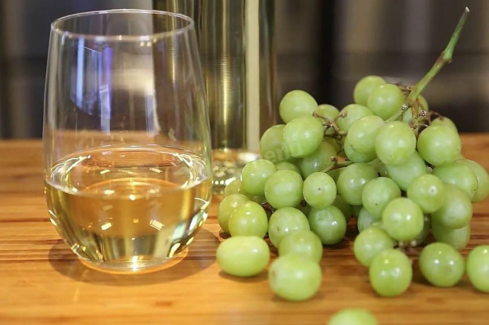

Что такое чача .

Чача – это спиртной напиток, произведенная из винограда в странах северного Кавказа. Чача относится к многочисленному представительству бренди и является крепким алкоголем, ибо иногда процентное содержание спиртов достигает в ней 60. Аналогом чачи является итальянская граппа.
Настоящая чача обязательно должна быть приготовлена в Грузии или Абхазии, так как только местные виноделы знают старинные секреты технологии производства этого уникального напитка.
Наряду с промышленным производством, как в Грузии, так и в Абхазии повсеместно распространено домашнее производство чачи. Чача для горцев является любимым крепким напитком, но им не злоупотребляют, а выпивают лишь рюмку или маленькую чарку в холодную погоду или в зимний период. Практически у каждого уважающего себя жителя в хозяйстве имеются небольшие запасы чачи, так как она считается символом долголетия. Ранее в Абхазии чачу употребляли в качестве аперитива, сейчас же этот напиток в основном используют на неофициальных застольях. Употребляют чачу исключительно в чистом виде и, в зависимости от того, в какой местности её употребляют (в Абхазии или в Грузии) закусывают её по-разному.«Мимо носа носят чачу, мимо рота - алычу...»В Грузии чачу производят в основном из винограда сорта Ркацители, а в отделившейся некогда Абхазии - из сортов Изабелла и Акачич. Видимо, из чувства протеста абхазцы не хотят повторять грузинские традиции. Для производства чачи используют недозревший виноград вместе с гребнем, который понижает кислотность напитка, и плюс к этому значительно повышает его PH, благодаря чему его крепость не так остро ощущается вкусовыми рецепторами.
Также чачу могут производить из виноградного жмыха, то есть из отжатого винограда, из которого уже приготовили винный материал. В любом из двух вариантов чачу перегоняют один, реже два раза.
Чачу, какой бы ни получалась крепость дистиллята - 40 градусов или все 75, - никогда не купажируют и не разбавляют водой. При перегонке чачи - в отличие, например, от коньяка - не отсекаются ни первые, ни последние порции спирта. Благодаря этому почти без потерь сохраняется терпкий аромат косточек и кожицы винограда, но в то же время в напиток попадает весь ассортимент сивушных масел. С ними приходится бороться путем разнообразных фильтров и абсорбентов - от жженных костей до молока.
После перегонки полученный напиток бутилируют, а некоторые сорта отправляют настаиваться в дубовые бочки. Как известно, выдержка в дубовых бочках - это первый признак благородства напитка, что ставит чачу на один уровень с именитыми алкогольными напитками.
Качество приготовленной чачи проверяется виноделами оригинальным способом: отлив немного чачи в чарку, винодел окунает в неё палец, после чего поджигает его - если чача полностью догорела и не обожгла палец, значит, качество напитка хорошее, и его с уверенностью можно назвать чачей. Традиционный алкогольный напиток Кавказа Символ долголетияКстати, иногда чачей в Грузии называют фруктовый самогон, не обязательно из винограда, но и из мандаринов или хурмы, инжира или апельсинов, туты (ягода шелковицы) или алычи. Надо отметить, что напиток этот является национальным грузинским продуктом, и начало его производства уходит вглубь веков. До сих пор в грузинских деревнях, почти в каждом дворе, производится своя чача, рецепт которой известен только данному роду - хранителю семейных традиций, и секрет этот передается от поколения к поколению на протяжении целого тысячелетия.
Виноградная грузинская чача обладает прозрачностью утренней росы, выраженным благородным ароматом, особой чистотой и мягкостью вкуса. Крепость - около 50%.
Обычно чача употребляется в чистом виде. Но также может применяться для изготовления различных коктейлей с добавлением свежих фруктов и льда. В крестьянской Грузии и Абхазии рюмку или маленькую чарку чачи традиционно принято выпивать утром, особенно в холодную погоду. В Западной Грузии чачу закусывают сладким, а в Восточной - соленьями.
Считается, что такое ежедневное употребление чачи - залог здоровья и долголетия. Чача - крепкий алкогольный напиток, поэтому, если ее не закусывать, может произойти сильное опьянение или даже отравление человека (при больших дозировках).
Если вы не готовы попробовать чачу в чистом виде, либо просто не любите крепкий алкоголь, воспользуйтесь следующими простыми рецептами:
«Грузинская груша»
Ингредиенты:
•70 мл чачи,
•20 мл персикового ликера,
•немного лимонного сока.
Приготовление:
Взбейте все ингредиенты вместе со льдом в шейкере и приготовленный напиток подайте в бокале.
«Тбилиси Фикс»
Ингредиенты:
•50 мл чачи,
•45 мл Cherry Brandy,
•30 мл лимонного сока,
•немного сахара.
Приготовление:
В стакане растворите чайную ложку сахара в небольшом количестве воды, добавьте дробленый лед. Затем медленно добавьте лимонный сок, ликер и чачу. Аккуратно перемешайте.
Также, можно смешивать чачу с цитрусовым соком (особенно мандариновым) в соотношении 1 к 1, чтобы получить простейший и достаточно колоритный коктейль.
Отличительный вкус чачи кроется в ее исключительно виноградном происхождении.
Чача хороша в любом виде
Признание напиткаСуществует достоверная информация, что еще в 1945 году, после Великой Отечественной Войны, на Ялтинской конференции союзных держав, сам товарищ Сталин вручил чачу в качестве подарка Франклину Рузвельту и Уинстону Черчиллю, которая до этого не была им известна (поскольку в советские времена промышленно ее не выпускали).И в наше время чача, так или иначе, связана с известными людьми. Например, сравнительно недавно, в 2006 году, на алкогольном рынке появился новый бренд чачи – «Вахтанг Кикабидзе», посвященный имени уважаемого грузинского актера и певца. Некоторые любители чачи шутят на эту тему: «Не пей, Кикабидзе станешь…».
В Абхазии несколько лет назад началось промышленное производство чачи под брендом «Абхазская Водка». Эта чача готовится в промышленных условиях по старинным рецептам. В этом напитке намного меньше примесей, чем в деревенской чаче, что достигается использованием современных технологий, а ее вкус соответствует давним традициям. Крепость – 45 градусов. Вкус – виноградный, мягкий.
Чача – колоритный национальный продукт народов северного Кавказа, гордость кавказских мастеров! Это удивительный напиток, впитавший вековые традиции и добродушие горных народов. Поговаривают, что чача обладает «веселящими» свойствами. Ну а как же иначе? Если вы попробуете настоящую «виноградную водку» в компании щедрых и радушных жителей Закавказья, то хорошее настроение и отличное времяпрепровождение вам обеспечено!
По материалам сайта : http://alky.su/